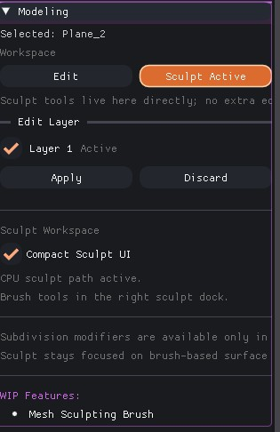
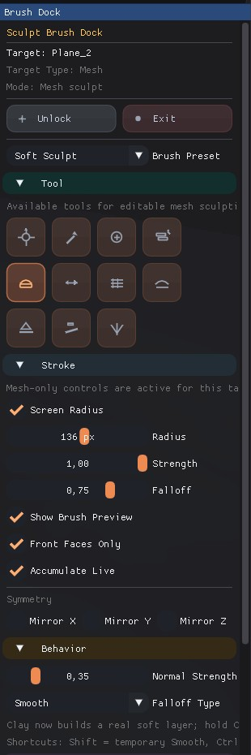
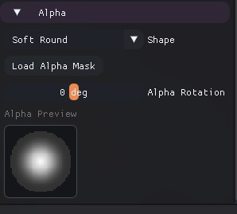
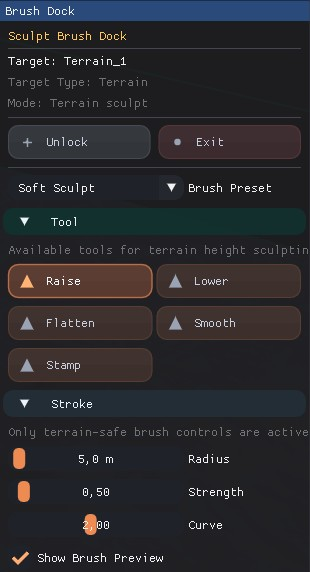

Sculpt

Please save the sculpt overview screenshot as
docs/images/sculpt_header.jpgSculpt is the shared brush workflow for both editable meshes and terrain. The main modifier panel handles workspace activation, while the right sculpt dock holds the actual brush controls.
1. Shared Sculpt Workflow

Please save the sculpt workspace screenshot as
docs/images/sculpt_workspace.jpgThe Sculpt workspace is selected from the same panel as Edit Mesh. Once active, target lock, compact mode, and brush setup are split between the modifier panel and the right brush dock.
| UI Block | Description |
|---|---|
| Workspace Toggle | Switches from topology editing to brush-based surface editing. |
| Unlock / Exit | Unlock keeps the workspace alive but releases the target, Exit resets the sculpt session. |
| Right Sculpt Dock | Hosts mesh sculpt or terrain sculpt controls based on the selected target type. |
2. Mesh Sculpt Dock
Mesh sculpt is focused on surface-form editing with dedicated brush tools, stroke settings, alpha control, symmetry, and shared falloff behavior.
| Section | Contains |
|---|---|
| Tool | Grab, Draw, Inflate, Layer, Clay, Pinch, Clay Strips, Smooth, Flatten, Scrape, and Crease. |
| Stroke | Screen-space or world radius, strength, falloff, spacing, flow, preview, front faces only, and live accumulation. |
| Behavior | Normal strength, falloff type, and tool-specific usage hints. |
| Alpha | Preset alpha, imported alpha, alpha scale, and alpha rotation. |

Please save the upper mesh sculpt dock screenshot as
docs/images/sculpt_mesh_dock_top.jpg
Please save the lower mesh sculpt dock screenshot as
docs/images/sculpt_mesh_dock_bottom.jpg3. Terrain Sculpt Variant

Please save the terrain sculpt dock screenshot as
docs/images/sculpt_terrain_dock.jpgWhen the active target is terrain, the same Sculpt workspace switches to terrain-safe controls instead of mesh sculpt tools.
| Terrain Mode | What Changes |
|---|---|
| Tool | Raise, Lower, Flatten, Smooth, and Stamp. |
| Stroke | Radius in meters, strength, curve, and preview are exposed directly for terrain height editing. |
| Mode-specific Blocks | Flatten adds fixed-height controls, Stamp adds rotation and stamp texture loading. |